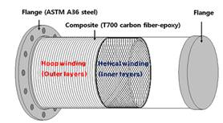
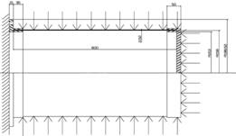
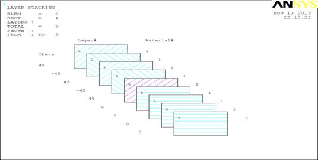
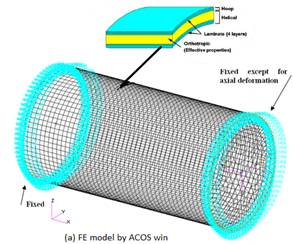
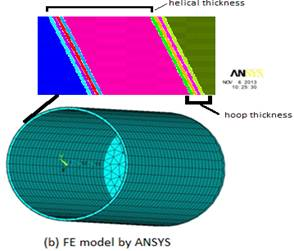
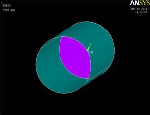
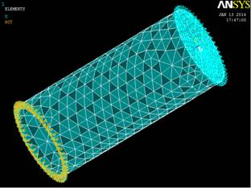
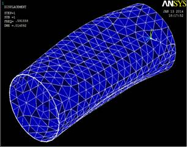
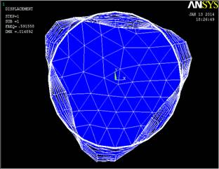
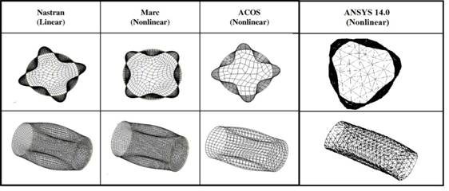

Paper Title :
Study of Post Buckling Behavior of Carbon-Epoxy Composite Pressure Vessel Subjected to Hydrostatic Pressure
Abstract
This paper was aimed to investigate the post buckling behaviour of moderately thick-walled filament-wound carbon–epoxy composite cylinders under external hydrostatic pressure through finite element analysis for under water vehicle applications.The winding angles were [±30/90] FW, [±45/90] FW and [±60/90] FW. Finite element software ANSYS 14.0 were used to predicted the buckling pressure of filament-wound composite cylinders.For the finite element modeling of the composite cylinder, an eight-node shell element is used.To verify the finite element results for comparison, three finite element software, MSC/NASTRAN , MSC/MARC and an in-house program ACOS were used.Among these software’s, the finite element software ANSYS predicts the buckling loads within 1.5% deviation.
Author
AbhijitDey
M.Tech Scholar, Department of Mechanical engineering, National Institute of Technology, Silchar, Assam, India.
GauravChaudhary
M.Tech Scholar, Department of Mechanical engineering, National Institute of Technology, Silchar, Assam, India.
P.L.Choudhury
Assoc. Professor, Department of Mechanical engineering, National Institute of Technology, Silchar, Assam, India.
K.M.Pandey
Professor, Department of Mechanical engineering, National Institute of Technology, Silchar, Assam, India
Paper Transcript of Paper Titled :
Study of Post Buckling Behavior of Carbon-Epoxy Composite Pressure Vessel Subjected to Hydrostatic Pressure
Study of Post Buckling Behavior of Carbon-Epoxy Composite Pressure Vessel Subjected to Hydrostatic Pressure
AbhijitDeya, GauravChaudharyb, P.L.Choudhuryc, K.M.Pandeyd
a,bM.Tech Scholar, Department of Mechanical engineering, National Institute of Technology, Silchar, Assam, India.
cAssoc. Professor, Department of Mechanical engineering, National Institute of Technology, Silchar, Assam, India.
dProfessor, Department of Mechanical engineering, National Institute of Technology, Silchar, Assam, India
Abstract-This paper was aimed to investigate the post buckling behaviour of moderately thick-walled filament-wound carbon–epoxy composite cylinders under external hydrostatic pressure through finite element analysis for under water vehicle applications.The winding angles were [±30/90] FW, [±45/90] FW and [±60/90] FW. Finite element software ANSYS 14.0 were used to predicted the buckling pressure of filament-wound composite cylinders.For the finite element modeling of the composite cylinder, an eight-node shell element is used.To verify the finite element results for comparison, three finite element software, MSC/NASTRAN , MSC/MARC and an in-house program ACOS were used.Among these software’s, the finite element software ANSYS predicts the buckling loads within 1.5% deviation.
Keywords- buckling, thick wall, composite, hydrostatic pressure.
- INTRODUCTION
Filament-wound composite materials have been successfully used in underwater vehicles and ocean structures over the past few decades, due to their light weight, high resistance to solt water corrosion and high strength to weight ratio [1–3]; the use of composite materials in civil and military aircraft has also expanded considerably over the past few years [4]. particularly, small underwater vehicles can be manufactured in one piece with composite materials. Underwater vessels suffer buckling due to hydrostatic pressure in subsea environment which reduces their load carrying capacity [6].
Application of polymer composites for underwater vehicles can reduce their weight and expand the depth of Operation. Although decades of R&D in composite materials have focused on aerospace engineering, new applications are opening up in various fields where weight or resistance to corrosion is critical. [5, 7].
For an underwater pressure vessel in deep sea, hydrostatic pressure induced buckling which tends to reduce the structural performance of the vehicle. Furthermore, a cylindrical structure generally experiences unstable buckling. [7, 8].
Generally, high external pressure vessels such as submarine structures have been manufactured of high strength steel, titanium and aluminum alloy. Large buoyancy is required for the structural weight. Accordingly, the weight-sensitive structures are expected to reduce weight for faster and more efficient performance. It was observed that the use of composite materials for underwater vehicles can reduce their total weight and expand the depth of operation because the reduced weight can allow for greater structural reinforcement [7, 9, and 10].
In the present work, relatively thick-walled composite cylinders (radius to thickness ratio, R/t = 18.7) were modeled by a filament winding process to reduce the material and geometric imperfections for a high depth underwater vehicle [7]. The main objective of this paper is to investigate the buckling, post buckling behavior and failure mode of moderately thick-walled composite cylinders with various winding angles under external hydrostatic pressure for underwater vehicle applications. The helical winding and hoop reinforcement ([±30/90] FW, [±45/90] FW and [±60/90] FW) were used for the composite cylinders.
TABLE I.DIMENSIONS OF COMPOSITE CYLINDERS.
ID |
stacking |
Length[mm] |
Inner radious[mm] |
Thelical |
Thoop |
Ttotal |
FWT 30 |
[±30/90]FW |
695 |
150 |
6.64 |
1.36 |
8 |
FWT 45 |
[±45/90]FW |
695 |
150 |
6.64 |
1.36 |
8 |
FWT 60 |
[±60/90]FW |
695 |
150 |
6.64 |
1.36 |
8 |
 
Fig (a). Fig (b).
Fig.1 (a) Schematic of a filament-wound composite cylinder with flange (b) Dimension of the cylinder
- SPECIMEN MODELING
The specimens were manufactured by a filament winding process using T 700–24 K carbon fiber and Biphenyla type epoxy resin. All of the cylinders have a 300-mm nominal inner diameter, a 695-mm nominal axial length and an 8-mm nominal thickness (see Fig. 1). The cylinders have three different winding angles [±30/ 90] FW, [±45/90] FW and [±60/90] FW. The parameters ±30, ±45 and ±60 denote the helical winding angle, while 90 is the hoop winding. For creating the finite element model, ACOS [15], an in-house program, was used. The carbon composite cylinders were fabricated by a filament winding process and tested in a water pressure chamber. Two commercial software’s, MSC.NASTRAN and MSC.MARC, were also used for comparison of the buckling pressure and mode shape. The nominal thickness of the hoop winding is 10% of the total thickness. This value was chosen because it was observed from the literature that best buckling pressures are obtained when the hoop ratio does not exceed 50% of the total thickness. When the hoop ratio exceeds 50%, the cylinders become very weak with respect to static strength [imp7]. In this present work the finite element model of composite pressure vessel is made by ANSYS 14.0 APDL, commercial finite element software. Three commercial software, MSC.NASTRAN and MSC.MARC and ACOS, an in-house program were used to validate the results. The cylinders have a 300mm nominal inner diameter, 695mm nominal axial length and an 8 mm nominal thickness.The nominal thickness of the hoop winding is 10% of the total Thickness.In ANSYS 14.0 APDL a 3D shell element element 8 node 281 having 6 degree of freedom at each node is used to recreate the model.
TABLE II. MECHANICAL PROPERTIES.
Property |
Symbol |
Rule of mixture |
Unit |
Elastic modulus
|
E1 |
149 |
GPa |
E2 |
10.6 |
GPa |
|
E3 |
10.6 |
GPa |
|
Poisson’s ratio |
ὺ12 |
0.253 |
- |
ὺ13 |
0.253 |
- |
|
ὺ23 |
0.421 |
- |
|
Shear modulus |
G12 |
4.14 |
GPa |
G13 |
4.14 |
GPa |
|
G23 |
3.31 |
GPa |
- FINITE ELEMENT ANALYSIS
Finite element analysis was conducted to predict not only the buckling loads but also the post buckling behavior. Failure analysis was performed using the in-house software ACOSwin, which makes possible nonlinear and progressive failure analysis. The commercial programs MSC/NASTRAN (linear analysis) and MSC/ MARC (nonlinear analysis) were used to validate the buckling loads. The theoretical background for ACOSwin is given in [13]. In the finite element models, four node elements, CQUAD4 in MSC.NASTRAN and Element 75 in MSC.MARC, were used in literature. The ACOS program used an 8-node laminate shell element that had 5 degrees of freedom at each node. In Ansys 14.0 APDL laminate shell element 8 node 281 having 6 degree of freedom at each node were used to predict the critical buckling pressure. For non-linear, post buckling behavior, progressive failure analysis was conducted by ACOS using complete unloading as the stiffness degradation method [16, 17]. The stacking sequence of different composite laminate with different orientation of fibers has shown in fig.2. The enlarge view of stacking sequence anddifferent composite laminate with various thickness have been shown in fig.3.

Fig.2 Layer stacking sequence of composite pressure vessel [±45/90] FW.

Fig.3 (a) Finite element model by ACOS win. (b) Finite element model by ANSYS APDL.
- SIMULATION
The composite structure that used in under water vehicle application, only hydrostatic pressure will consider which can apply redialy inward direction over the outer surface of the body.The equipment can apply pressures up to 10 MPa, which is equal to the pressure at a depth of 1000 meter of water. At the left end of the composite cylinder all degree of freedom can be restricted and at the right end only two degree of freedom has restricted (x direction & y direction), so that the system will undergo only axial deformation. The finite element modeling, meshing and simulation of carbon-epoxy composite filament wound pressure vessel have shown in figure 4.

Fig 4(a). Fig 4(b).

Fig 4(c). Fig 4(d).
Figure 4. (a) Finite element model. (b) Meshed model. (c) Buckling Mode shape. (d) Buckling Mode shape (Front view).
- RESULTS AND DISCUSSION.
The buckling analysis has done by Ansys APDL. It has observed that the result for critical buckling is good matched with the existing experimental results. The figures are describing the comparison study of the composite pressure vessels.Table 3 shows the experimental and finite element buckling pressure. The ANSYS 14.0 APDL results as well as the linear and nonlinear analysis results by MSC/NASTRAN, MSC/MARC and ACOSwin are presented. In ANSYS non-linear buckling analysis has been done. Fig.5 described the different mode shape obtained by MSC/NASTRAN, MSC/MARC, ACOSwin and Ansys 14.0 respectively. Here [±45/90] FW specimenwas consider for the finite element analysis.

Figure 5. Buckling modes of the [±45/90] FW composite cylinder.
TABLE III. EXPERIMENTAL ANDFINITE ELEMENT BUCKLING PRESSURE (unit: Mpa).
Result Obtained |
Buckling Pressure |
Percentage Of Error (%) |
Experimental Test |
0.60 |
- |
ANSYS 14.0 APDL |
0.591 |
1.5 |
MSC.NASTRAN |
0.677 |
12.08 |
MSC.MARC |
0.691 |
15.2 |
ACOSwin |
0.671 |
11.8 |
Figure 6. Comparison of experimental and computational critical buckling pressure obtained by different software’s.
Pcr(Mpa)
Figure 7. Bar graph (a) experimental test result (b) result obtained by Ansys (c) result obtained by Nastran (d) result obtained by Marc (e) result obtained by ACOSwin.
- CONCLUSION.
The buckling behavior of moderately thick walled, filament-wound, carbon–epoxy cylinders subjected to hydrostatic pressure was investigated. A total 9 no. of composite laminates has been considered for finite element analysis. The different orientation of the composite layers has been taken [±45/90] FW. Analyses were conducted using the finite element package ANSYS 14.0 APDL. Three finite element program ACOS win, MSC/NASTRAN and MSC/MARC were used to validate the results. A shell
Element 8 node 281 was used to create the finite element model. The ANSYS shell element model predicted the buckling pressure with 1.5% deviation from the other three finite element results and experimental results, not considering the initial imperfections of the cylinders. The results show that finite element analysis with shell elements can be used to evaluate the buckling load of moderately thick-walled, filament-wound composite cylinders under external hydrostatic pressure.
REFERENCES
Ossc TJ, Lee TJ. Composite pressure hulls for autonomous underwater vehicles. In: IEEE oceans conference record, Vancouver, BC, Canada, 29September–4 October 2007. No. 4449124.
Corona-Bittick KA, Baker E, Leon G, Hall J. Filament winding of the navy composite storage module. SAMPE J 2001; 37:52–6.
Jackson D, Dixon M, Shepherd B, Kebadze E, Lummus J, Crews M, et al. Ultra-deepwater carbon fiber composite pressure vessel development, dualelement buoyancy unit (DEBU). SAMPE J 2007; 43:61–70.
Rasheed HA, Yousif OH. Buckling of thin laminated orthotropic composite rings/long cylinders under external pressure. Int J Struct Stab Dyn2001; 1:485–507. M. Young, The Technical Writer's Handbook. Mill Valley, CA: University Science, 1989.
Rasheed HA, Yousif OH. Stability of anisotropic laminated rings and long cylinders subjected to external hydrostatic pressure. J AEROSP Eng2005; 18:129–38.
Hur SH, Son HJ, Kweon JH, Choi JH. Post buckling of composite cylinders under external hydrostatic pressure. Compos Struct 2008; 86:114–24.
Moon CJ, Kim IH, Choi BH, Kweon JH, Choi JH. Buckling of filament-wound composite cylinders subjected to hydrostatic pressure for underwatervehicle applications. Compos Struct 2010; 92:2241–51.
Han JY, Jung HY, Cho JR, Choi JH, Bae WB. Buckling analysis and test of composite shells under hydrostatic pressure. J Mater Process Technol2008; 201:742–5.
Ross CTF. A conceptual design of an underwater vehicle. Ocean Eng2006; 33:2087–104.
Smith CS. Design of submersible pressure hulls in composite materials. MarineStruct 1991; 4:141–82.
Hur SH, Son HJ, Kweon JH, Choi JH. Post buckling of composite cylinders under external hydrostatic pressure. Compos Struct 2008; 86:114–24.
Geier B, Meyer-Piening H-R, Zimmermann R. On the influence of laminate stacking on buckling of composite cylindrical shells subjected to axial compression. Compos Struct 2002; 55:467–74.
Hernandez-Moreno H, Douchin B, Collombet F, Choqueuse D, Davies P. Influence of winding pattern on the mechanical behavior of filament wound composite cylinders under external pressure. Compos SciTechnol 2008; 68(3–4):1015–24.
Han JY, Jung HY, Cho JR, Choi JH, Bae WB. Buckling analysis and test of composite shells under hydrostatic pressure. J Mater Process Technol 2008; 201:742–5.
Tafreshi A. Delamination buckling and post buckling in composite cylindrical shells under external pressure. Thin-Walled Struct 2004; 42:1379–404.
Xu P, Zheng JY, Liu PF. Finite element analysis of burst pressure of composite hydrogen storage vessels. Mater Des 2009; 30:2295–301.
Velosa JC, Nunes JP, Antunes PJ, Silva JF, Marques AT. Development of a new generation of filament wound composite pressure cylinders. Compos SciTechnol 2009; 69:1348–53.